WINSTAP Configuration
GIM installation on windows machine
-
Connect to ceratops machine using RDP client.
-
In File Explorer got to
c:\bootcamp\zipdirectory where you GIM installers for Windows are located. Extract archive for build 12.2_r120201205_1.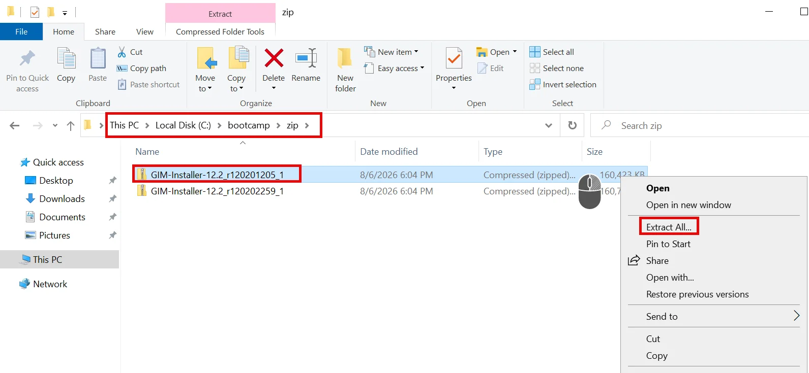
-
Go to directory with just unpacked files and start GIM client installer –
Setup.exe.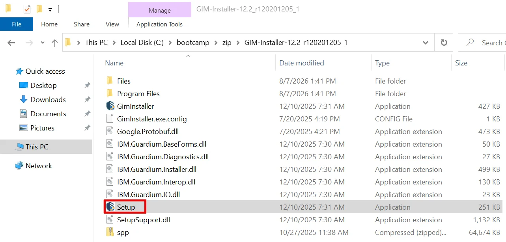
-
Installation wizard will appear. Accept license agreement and Next select Typical installation.
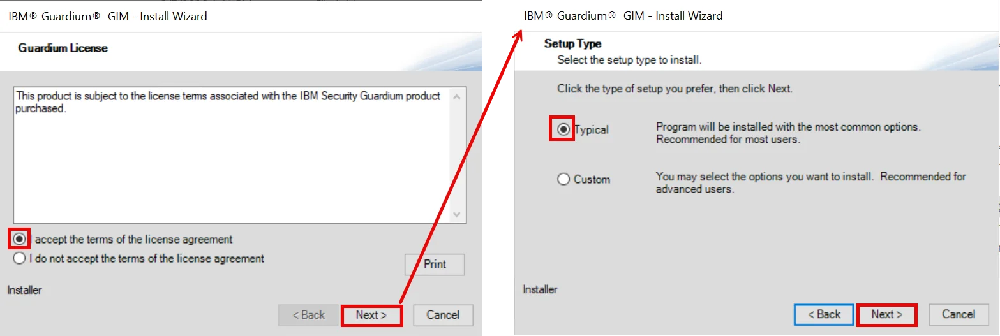
-
Install GIM in the Standard Mode, insert cm.demo.guardium into Appliance Address field and select Auto Assign Local IP option. Confirm installation start – press Install button and wait for confirmation that installation is finished.
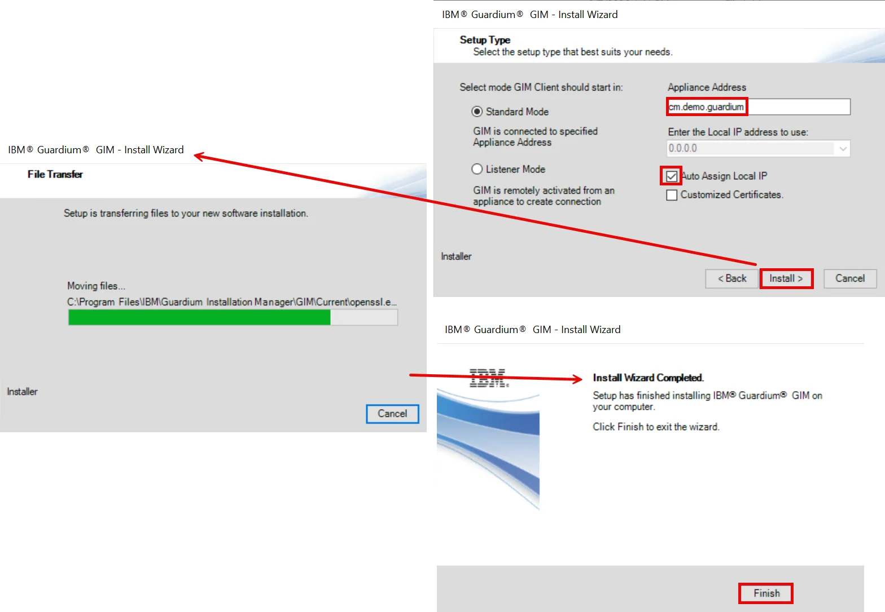
-
Go to cm UI and open GIM Processes Monitor view. Notice that new, Windows based GIM client appeared on the list.
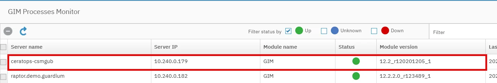


STAP installation
-
In Setup by Client view on cm select ceratops GIM client.
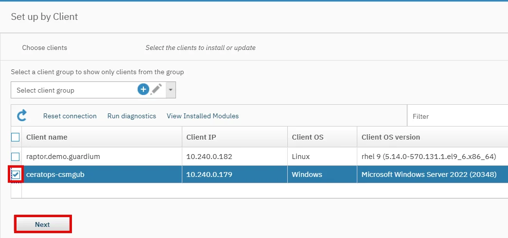
-
Then select WINSTAP 12.2_r120201205_1 for installation (uncheck Show only latest version option before).
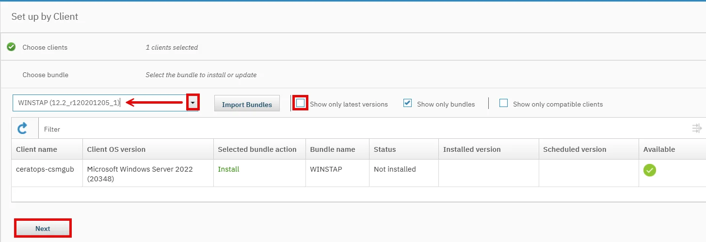
-
Set the one parameter only – WINSTAP_SQLGUARD_IP with coll1.demo.guardium as a value. Finally press Install button and start installation.
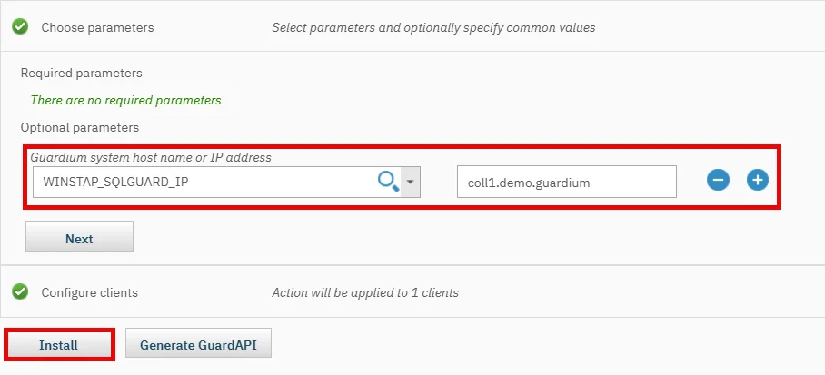
-
Wait for confirmation that STAP has been installed.
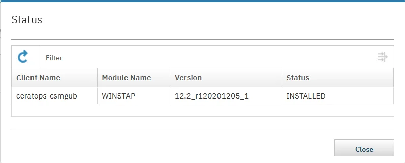
-
S-TAP Control view on coll1 should include now new STAP instance with IP address of our Windows machine. You should also see that instance discovery process identified MSSQL instances on this machine.
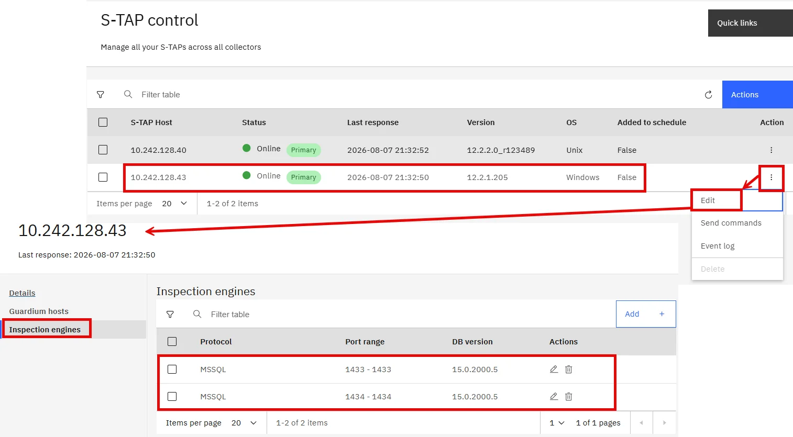


Traffic SELECT visibility
-
In RDP session on ceratops open MSSQL management studio. Login to database as sa user with default service password (use SQL Server Authentication).
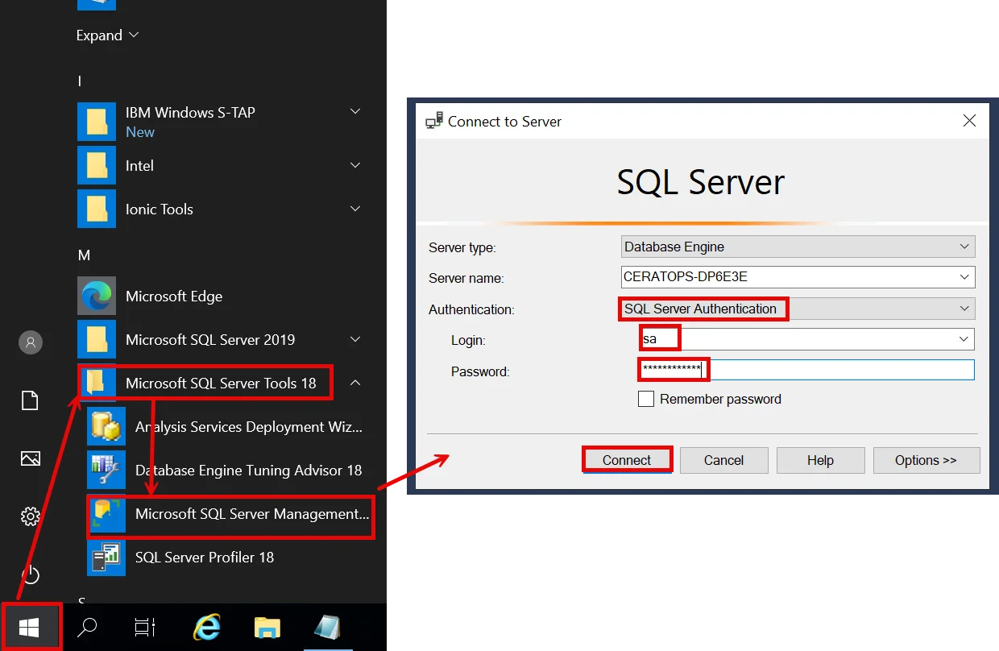
-
Open Query editor and execute simple dummy query. Right click on the opened instance to display the context menu, then select the New Query option. Insert query below to the new area space and use Execute button.
SELECT 'QUERY FROM SMSS';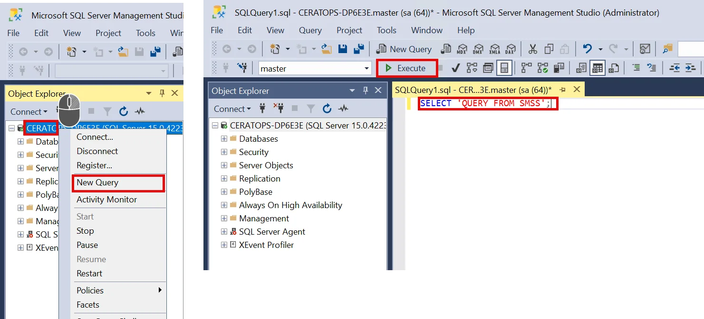
-
Check Full SQL (Training) report on coll1 and confirm that our query is correctly sniffed.
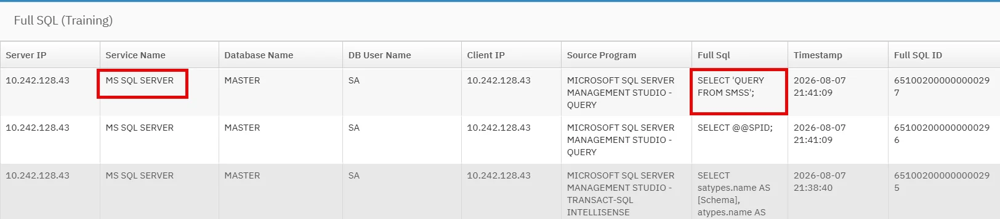


GIM update
-
In cm UI open Setup by client to update GIM client to version 12.2_r120201205_1. To see Windows GIM client bundles you must uncheck Show only bundles option! Then Install new version and confirm success.
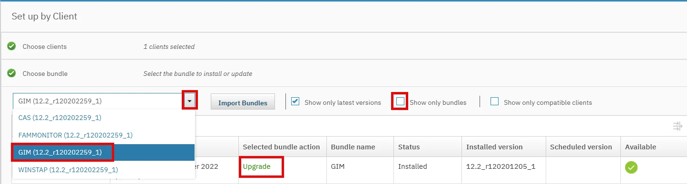
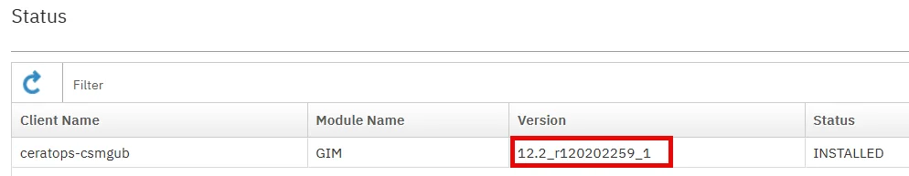
-
After successful upgrade check GIM Process Monitor view on cm to confirm that new version of GIM client has been deployed on ceratops.
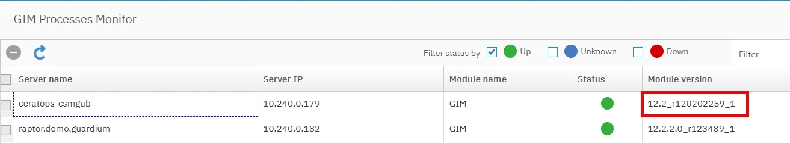
-
If the GIM client instance will have red status try to restart service IBM Guardium Installation Manager and check GIM Process Monitor again.
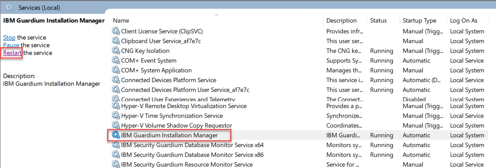


STAP update
-
Now, upgrade STAP to version 12.2_r120202259_1.
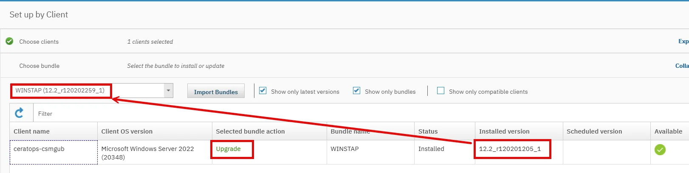
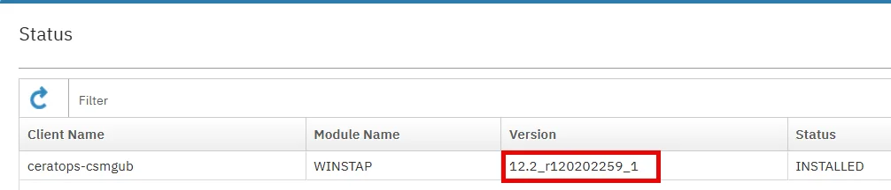
-
Afer successful uprade check version of installed WINSTAP in S-TAP Status report on coll1.
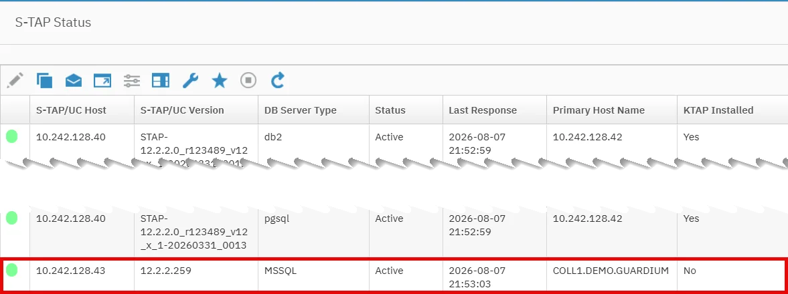
-
In MSSQL Management Studio execute new SQL, like:
SELECT 'QUERY FROM SMSS AFTER STAP UPDATE';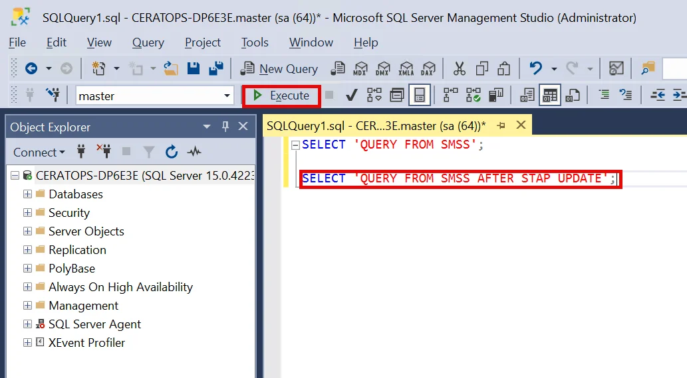
-
The traffic will appear in the report Full SQL (Training). However sometimes the WINSTAP update may require MSSQL engine restart.
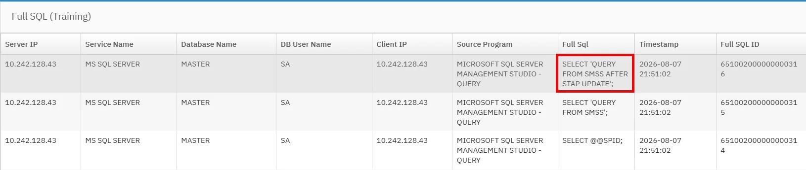


Appendix
Dependencies:
Deliverables from this lab are referred in FAM lab. If you do not plan to follow the FAM lab afterwards, you may skip this one.
Resources:
Instructor notes: